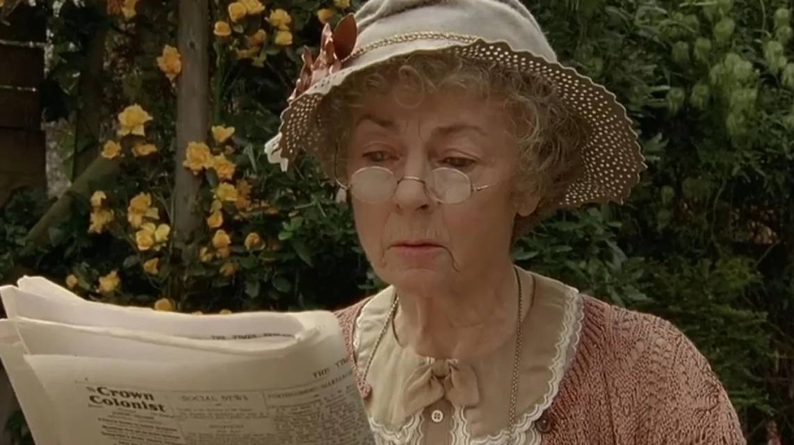

FAMOUS DETECTIVE CHARACTERS!
They show shining wisdom in literatures


Key features of them
Work
Finding the truth with rational reasoning and evidence.
Passion
The exciting of finding truth.
Duty
Thinking, and to find something what is general can not find.
Skills
Reasoning, research, finding, insight
If you do not very familiar with detective, you can clik the vide to get some interesting TV series.
You also can check real public crime case to know more real smart tedectives.
Of course, you can clik the button below to meet with more famous detectives characters if you want.
They are the guardian of truth
Internationally renowned criminal investigation expert
He pioneered the use of scientific evidence to convict suspects, and has examined the assassination of John F. Kennedy, Nixon's Watergate scandal, the murder of Simpson's wife, and Chen Shui-bian's March 19 shooting. He has participated in the investigation of more than 6,000 major criminal cases in various states in the United States and 17 countries around the world. He is known as the "contemporary Sherlock Holmes" and the "Chinese detective", and has won more than 800 honorary awards.
Former Captain of the Pre-trial Team of the Criminal Investigation Brigade of the Public Security Bureau of Hangzhou City, Zhejiang Province
Since 2000, she has presided over or led the presiding over more than 350 major and serious cases in Hangzhou, and more than 300 of them were sentenced to death in the first instance. The case files she has bound can fill a 30-square-meter room. She has been awarded the title of Zhejiang Province "March 8th Red Flag Bearer", Provincial Criminal Investigation Expert, and Hangzhou City "March 8th Red Flag Bearer".
Founder of Private Detective Agency
One of the most famous female detectives in British history. At the age of 20, she eloped for love and got married, then set up a detective studio and began her detective career. Maud's studio was once ignored, but she gradually won the trust and praise of customers with her outstanding ability to solve cases and unique investigation methods. Her investigation methods are unique and effective. She often disguises herself as different identities to conduct investigations and successfully solves many complex cases.Her success won respect.
Hong Kong Police
In 1992, he led a team to suppress bandits and a gunfight broke out. In order to save his comrades, he was shot in the forehead and was in critical condition. After being rescued, he lost his sense of taste and smell. After his reinstatement, he was still stationed in the Serious Crime Unit and solved many major cases, including the murder of Assistant Professor Ke Dan of the University of Hong Kong, the nylon bag hiding case in Amoy Gardens, and the corpse burning case of the gang of Sau Mau Ping. His story was even adapted into a movie "Tasteless Detective".
They show shining wisdom in literatures
Do you know more interesting detectives? Send to me now!
Hong Kong, China
Phone: +852 59575979
Email: 24420476@life.hkbu.edu.hk